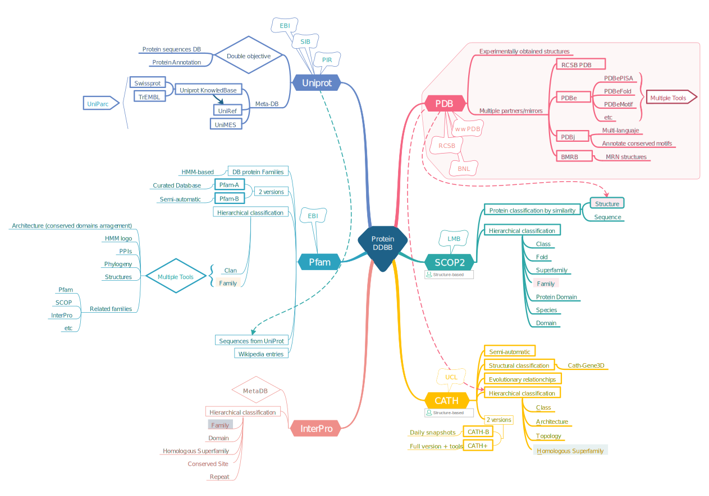

Protein Databases
Structure comparison and alignment
As in the case of sequences, comparison and alignment of protein structures is a fundamental and widely used task in computational structure biology. The identification and statistical measure of the similarities between two or more structures allow their classification and infer functional and evolutionary relationships. Moreover, this process is essential during protein modeling, allowing to identify and select intermediate models.
It is also important to clear up any possible confusion between alignment and superposition, as they are often interchanged in the literature. An structural alignment tries to identify similarities and differences between two structures, while structure superposition requires the previous knowledge of such equivalences. Thus, superposition tires to minimize the distance between already known equivalent structures by finding a transformation that produces either the lowest root-mean-square deviation (RMSD) or the maximal equivalences within an RMSD cutoff. A better alignment will allow a better superposition. Thus, although alignment and superposition are two different processes, the RMSD can be used as an indication of both (the lowest RMSD, the best alignment/superposition).
Major protein databases
This section does not aim to comprehensively review all protein databases in detail. Indeed, you probably already know most of the databases we are discussing. We will clarify the main differences and applications of Pfam, Uniprot, Prosite, PDB, SCOP & CATH. As usual, I encourage you to check out online in the references mentioned below for more detailed information.
In bioinformatics, databases are often categorised as primary or secondary. Primary databases are populated with experimentally derived data such as nucleotide sequence, protein sequence or macromolecular structure. Importantly, once given a database accession number, the data in primary databases are never changed: they form part of the scientific record. By contrast, secondary databases comprise data derived from the results of analysing primary data. Secondary databases often draw upon information from numerous sources, including other databases and the scientific literature. They are highly curated, often using a complex combination of computational algorithms and/or manual analysis and interpretation to derive new knowledge from the public record of science.
The main protein primary databases are NCBI Protein for protein sequenes and RCSB-PDB for protein structures. Uniprot (see below) also contains a primary sequence database, named TrEMBL. It also incorporated in 2002 PIR-PSD, joining the databases of the Protein information Resource, EMBL and SIB in a single (meta)database (see https://proteininformationresource.org/pirwww/dbinfo/pir_psd.shtml).
Sequence databases
Uniprot
The Uniprot databases are maintained by the Uniprot consortium, created in 2002 by EMBL-EBI, SIB and PIR. Uniprot can be considered nowadays as a metadatabase as its entries contain information from diverse sources. It was created with two goals, constitute a non-redundant comprehensive protein sequence database and enrich that database with annotation of those proteins. Annotations include, but it is not limited to: protein and gene families, function and structure-function available data, interactions with other proteins or cofactor, localization, patterns of expression, variants… Thus, it aims joining the goals of both primary and secondary DDBBs.
The central hub of Uniprot databases is Uniprot Knowledgedbase. It is a collection of functional information on proteins, with accurate, consistent and rich annotation. The UniProtKB consists of two internal databases: a section containing manually-annotated records with information extracted from literature, community suggestions and curator-evaluated computational analysis, and a section with computationally analyzed records. For the sake of continuity and name recognition, the two sections are referred to as “UniProtKB/Swiss-Prot” (reviewed, manually annotated) and “UniProtKB/TrEMBL” (unreviewed, automatically annotated), respectively.
Besides cross-references to structural information, in the last years, UniprotKB has also incorporated structural data from Alphafold database (created by DeepMind and EBI), see “State-of-the-art protein modeling with Deep Learning-based methods” module.
Sequences with different detail of annotation can be found in two overlapping and complementary databases in Uniprot: Uniparc and Uniref. Briefly, UniParc (UniProt Archive) is a comprehensive and non-redundant database that contains most of the publicly available protein sequences in the world. UniParc avoided redundancy by storing each unique sequence only once and giving it a stable and unique identifier (UPI) making it possible to identify the same protein from different source databases. A UPI is never removed, changed or reassigned. On the other hand, UniRef (UniProt Reference Clusters) provide clustered sets of sequences from the UniprotKB (and selected UniParc records) in order to obtain complete coverage of the sequence space at several resolutions while hiding redundant sequences (but not their descriptions) from view. The UniRef100 database combines identical sequences into a single UniRef entry, displaying the sequence of a representative protein, the accession numbers of all the merged entries and links to the corresponding. UniRef90 is built by clustering UniRef100 sequences using the MMseqs2 algorithm (Steinegger and Söding 2018) such that each cluster is composed of sequences that have at least 90% sequence identity to and 80% overlap with the longest sequence (a.k.a. seed sequence ) of the cluster. Similarly, UniRef50 is built by clustering UniRef90 seed sequences that have at least 50% sequence identity to and 80% overlap with the longest sequence in the cluster. UniParc and Uniref contain only protein sequences. All other information about the protein must be retrieved from the source databases using the database cross-references.
InterPro
InterPro aims to be a functional database, by classifying proteins into families, domains and important sites. To classify proteins in this way, InterPro uses predictive models, known as signatures, provided by several different databases (up to 13) that make up the InterPro consortium. InterPro combines those different signatures representing equivalent families, domains or sites, and provides additional information such as descriptions, literature references and Gene Ontology (GO) terms, to produce a comprehensive resource for protein classification (see Blum et al. (2021)).
InterPro database is updated every 2 months and it is a very useful for annotation of ORFans or divergent proteins.
Pfam
Pfam is a protein database that aims to classify sequences by their evolutionary relationships. It was founded in 1995 and it has been very useful for functional annotation of genomic data. The Pfam’s website (http://pfam.xfam.org/) will be closed by the end of 2022. However, Pfam database will not be discontinued, but integrated into InterPro web site (see the Xfam Blog entry).
Pfam uses HMM profiles (we will discuss about HMMs in the Homology Modeling module) to classify proteins into families, which are grouped into clans. Check out the EBI course about using Pfam: https://www.ebi.ac.uk/training/online/courses/pfam-creating-protein-families/
The current release (35.0) contains 19,632 entries (families and clans). Pfam was designed as a database that should be often updated in the fast-forward genomic era. To this aim, they use two alignment types. Each Pfam family has a seed alignment that contains a representative set of sequences for the entry. A profile hidden Markov model (HMM) is automatically built from the seed alignment and searched against a sequence database called pfamseq using the HMMER3 software (http://hmmer.org/). All sequence regions that satisfy a family-specific curated threshold, also known as the gathering threshold, are aligned to the profile HMM to create the full alignment (Mistry et al. 2020).
In addition to the HMM-based Pfam entries (Pfam-A), they used to provide a set of unannotated, computationally generated multiple sequence alignments called Pfam-B. However, in the last Pfam versions, the Pfam-B alignments are presently only released on the Pfam FTP site.
Pfam has also been used in the creation of other resources such as, Rfam (RNA families) and Dfam (transposable DNA elements).
Structure databases
RCSB-PDB
SCOP
sd
CATH
dfa
Graphical summary
